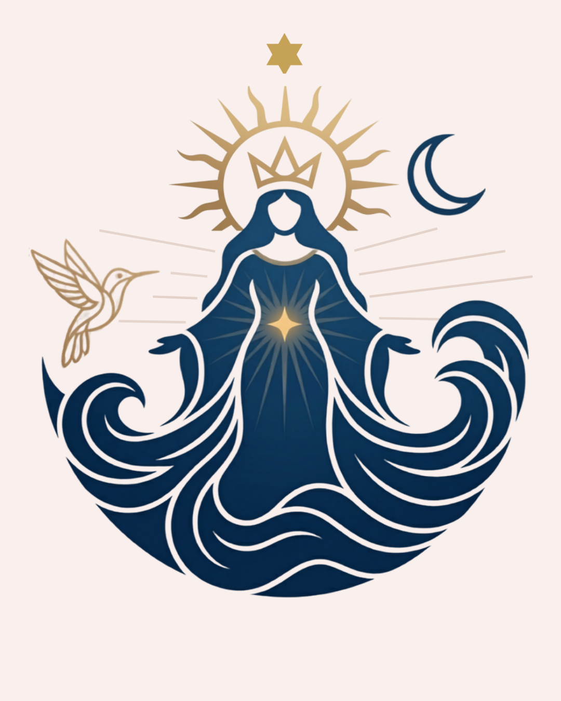

Ayudanos a proteger nuestro hogar espiritual.
Un mensaje personal
Querida hermandad: escribimos esto con el corazón abierto, como solo se puede escribir entre quienes comparten el camino del Daime.
Somos Esperanza y Miguel Ángel, dirigentes del Céu da Rainha do Mar, iglesia del Santo Daime en Mallorca.
A finales de marzo recibimos la notificación de que debíamos abandonar la casa donde se encuentra nuestra iglesia. Sin embargo, el banco nos ha ofrecido la posibilidad de adquirirla por 490.000 €.
Esta casa es mucho más que un lugar físico. Es nuestro templo, nuestro hogar y el corazón de la familia daimista en Mallorca. Aquí realizamos nuestros trabajos espirituales, recibimos hermanos y hermanas que buscan la luz, y sembramos semillas de esperanza.
No somos expertos en campañas ni en marketing. Somos fardados de la doctrina que hoy acuden a su familia espiritual en el momento más importante de nuestra historia. Agradecemos de corazón cada gesto de ayuda que recibamos.
Abrazos de Luz,
Esperanza y Miguel Ángel
Céu da Rainha do Mar – Mallorca
Nuestra historia
Una historia que comenzó en Ibiza en 1993 y que, paso a paso, construyó una comunidad que hoy es familia.
Esperanza y Miguel Ángel conocen el Santo Daime en Ibiza. Profundamente tocados por la doctrina, viajan a la Vila Céu do Mapiá, en la Amazonía, donde conocen sus raíces y celebran su matrimonio espiritual.
El 1 de junio llegan a Mallorca con el Daime entregado por el Padrino Alfredo. Meses después se realiza el primer trabajo espiritual en Son Rustic, dando origen a la comunidad que más tarde sería conocida como el Céu da Rainha do Mar.
La boda civil de Miguel y Esperanza reúne a hermanos y hermanas de toda España y Europa. Durante la celebración, en el monasterio de Bonany, se canta por primera vez en Mallorca "O Cruzerio" con presencia de maestros de la tradición amazónica.
Mallorca acoge la primera Asamblea Nacional, un encuentro histórico que daría origen a la Asociación Daimista de España (ADE).
El arresto de Chico Corrente y Fernando Ribeiro marca un momento difícil para la comunidad daimista. Aun así, la doctrina continúa creciendo y fortaleciéndose gracias a la unión y perseverancia de sus seguidores.
La doctrina obtiene su reconocimiento legal en España, consolidando años de esfuerzo y dedicación de toda la comunidad.
Después de años realizando nuestros trabajos en distintos lugares de la isla, encontramos la casa que hoy alberga el Céu da Rainha do Mar. Con trabajo, amor y esfuerzo colectivo, este espacio se convierte en nuestro templo.
La llegada de Marta y Samuel desde el Céu do Mapiá fortalece el vínculo vivo con la tradición amazónica, aportando experiencia, conocimiento y una profunda conexión con la doctrina.
Después de más de tres décadas construyendo esta comunidad, recibimos la oportunidad de adquirir la casa que ha sido nuestro hogar espiritual durante tantos años. Hoy trabajamos juntos para que siga siendo el corazón del Daime en Baleares.
El momento
El espacio que habitamos está en venta. Si no actuamos antes de junio de 2026, lo perdemos. No hay una segunda oportunidad para reconstruir 32 años de historia compartida.
Lo que protegemos
Cómo puedes ayudar
Esta página no es una campaña pública. La compartimos únicamente dentro de nuestra familia espiritual porque creemos en la confianza que nace dentro de la doctrina.
No hay una cantidad mínima. Toda contribución es un acto de amor hacia este proyecto. Y para quienes puedan hacer algo mayor, queremos reconocerlo de forma especial:
Cómo contribuir
Puedes transferir directamente o contactar con Esperanza para hablar antes. No hay prisa en la conversación — solo en el tiempo que tenemos.